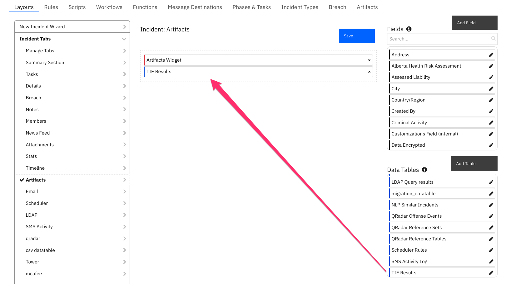

fn_odbc_query#
Table of Contents#
Release Notes#
Version |
Date |
Notes |
|---|---|---|
1.1.0 |
09/2022 |
Add support for mulit-tenancy |
1.0.3 |
07/2020 |
App Host Support |
1.0.2 |
02/2019 |
Added Python 3.6 support |
1.0.1 |
12/2019 |
Documentation update and “Example ODBC SELECT PostgreSQL Workflow” update |
1.0.0 |
06/2018 |
Initial Release |
For customers upgrading from a previous release to 1.1.0 or greater, the app.config file must be manually edited to add new settings required to each server configuration. See 1.1.0 Changes
Overview#
The ODBC Query Function establishes an OBDC connection to the desired SQL database server and executes SELECT, INSERT, UPDATE or DELETE SQL statements.
SOAR Components for ‘fn_odbc_query’

ODBC Functions for SOAR
Key Features#
Ability to perform SELECT, INSERT, UPDATE, and DELETE operations on relational databases.
Support for MySQL/MariaDB, Postgres, oracle, and Microsoft SQL Server.
Compatible with App Host.
Supportt for having multiple databases configured in the app.config
Contains preconfigured drivers if using the container format.
Requirements#
This app supports the IBM Security QRadar SOAR Platform and the IBM Security QRadar SOAR for IBM Cloud Pak for Security.
SOAR platform#
The SOAR platform supports two app deployment mechanisms, App Host and integration server.
If deploying to a SOAR platform with an App Host, the requirements are:
SOAR platform >=
44.0.7585.The app is in a container-based format (available from the AppExchange as a
zipfile).
If deploying to a SOAR platform with an integration server, the requirements are:
SOAR platform >=
44.0.7585.The app is in the older integration format (available from the AppExchange as a
zipfile which contains atar.gzfile).Integration server is running
resilient_circuits>=43.0.0.If using an API key account, make sure the account provides the following minimum permissions:
Name
Permissions
Org Data
Read
Function
Read
The following SOAR platform guides provide additional information:
App Host Deployment Guide: provides installation, configuration, and troubleshooting information, including proxy server settings.
Integration Server Guide: provides installation, configuration, and troubleshooting information, including proxy server settings.
System Administrator Guide: provides the procedure to install, configure and deploy apps.
The above guides are available on the IBM Documentation website at ibm.biz/soar-docs. On this web page, select your SOAR platform version. On the follow-on page, you can find the App Host Deployment Guide or Integration Server Guide by expanding Apps in the Table of Contents pane. The System Administrator Guide is available by expanding System Administrator.
Cloud Pak for Security#
If you are deploying to IBM Cloud Pak for Security, the requirements are:
IBM Cloud Pak for Security >= 1.10.
Cloud Pak is configured with an App Host.
The app is in a container-based format (available from the AppExchange as a
zipfile).
The following Cloud Pak guides provide additional information:
App Host Deployment Guide: provides installation, configuration, and troubleshooting information, including proxy server settings. From the Table of Contents, select Case Management and Orchestration & Automation > Orchestration and Automation Apps.
System Administrator Guide: provides information to install, configure, and deploy apps. From the IBM Cloud Pak for Security IBM Documentation table of contents, select Case Management and Orchestration & Automation > System administrator.
These guides are available on the IBM Documentation website at ibm.biz/cp4s-docs. From this web page, select your IBM Cloud Pak for Security version. From the version-specific IBM Documentation page, select Case Management and Orchestration & Automation.
Proxy Server#
The app does not support a proxy server.
Python Environment#
Both Python 3.6 and Python 3.9 are supported. Additional package dependencies may exist for each of these packages:
pyodbc~=4.0
resilient_circuits>=43.0.0
Installation#
Install#
To install or uninstall an App or Integration on the SOAR platform, see the documentation at ibm.biz/soar-docs.
To install or uninstall an App on IBM Cloud Pak for Security, see the documentation at ibm.biz/cp4s-docs and follow the instructions above to navigate to Orchestration and Automation.
App Configuration#
The following table provides the settings you need to configure the app. These settings are made in the app.config file. See the documentation discussed in the Requirements section for the procedure.
Config |
Required |
Example |
Description |
|---|---|---|---|
sql_autocommit |
No |
|
Executes commits automatically after every SQL statement |
sql_connection_string |
Yes |
|
Connection string |
sql_database_type |
Yes |
|
Supported setting to use by using one of the keywords: MariaDB, PostgreSQL, MySQL, SQLServer |
sql_number_of_records_returned |
No |
|
Number of rows to fetch |
sql_restricted_sql_statements |
No |
|
Restricted SQL statements as a list, separated by a comma, using square brackets. |
sql_query_timeout |
No |
|
Query timeout in seconds. |
Drivers#
Use the following drivers in sql_connection_string:
Driver Name |
Database |
|---|---|
PostgreSQL |
PostgreSQL |
MariaDB ODBC 3.0 Driver |
mySQL, mariaDB |
FreeTDS |
Microsoft SQL Server |
Oracle 12c ODBC driver |
Oracle |
1.1.0 Changes#
Starting in version 1.1.0, more than one ODBC database can be configured for SOAR case data synchronization. For enterprises with only one ODBC database, your app.config file will continue to define the ODBC database under the [fn_odbc_query] section header.
For enterprises with more than one ODBC database, each database will have it’s own section header, such as [fn_odbc_query:database_label1] where database_label1 represents any label helpful to define your ODBC environment.
Be aware that modifications to the workflows will be needed to correctly pass this label through the db_label function input field if the ODBC database/dattabases in the app.config have labels.
If using the app.config from before version 1.1.0 then the db_label field can be ignored.
If you have existing custom workflows, see Creating workflows when database/databases in app.config are labeled for more information about changing them to reference the db_label function input field.
Custom Layouts#
Import the Data Tables and Custom Fields like the screenshot below:

Function - fn_odbc_query#
A function that runs ODBC queries. Parameters are passed to the database separately, protecting against SQL injection attacks. Inputs: sql_query: a SQL query with set parameters using a question mark as a place holder, SQL statements SELECT, INSERT, UPDATE and DELETE are supported sql_condition_value1: value for the question mark - condition value 1 sql_condition_value2: value for the question mark - condition value 2 sql_condition_value3: value for the question mark - condition value 3

Inputs:
Name |
Type |
Required |
Example |
Tooltip |
|---|---|---|---|---|
|
|
No |
|
Label given to the database you wish to use or leave blank when databases are not labeled in the app.config. |
|
|
No |
|
- |
|
|
No |
|
- |
|
|
No |
|
- |
|
|
Yes |
|
Predefined SQL statement |
Outputs:
NOTE: This example might be in JSON format, but
resultsis a Python Dictionary on the SOAR platform.
results = {
"content": {
"entries": null
},
"inputs": {
"db_label": "database_label1",
"sql_condition_value1": "9",
"sql_condition_value2": "Bob",
"sql_query": "UPDATE mock_data SET id = ? WHERE first_name = ?"
},
"metrics": {
"execution_time_ms": 1107,
"host": "local",
"package": "fn-odbc-query",
"package_version": "1.1.0",
"timestamp": "2022-09-28 13:19:58",
"version": "1.0"
},
"raw": null,
"reason": null,
"success": true,
"version": 2.0
}
Example Pre-Process Script:
inputs.sql_condition_value1 = artifact.value
inputs.db_label = rule.properties.db_label
Example Post-Process Script:
# This list contains SOAR data table api field names.
# Exclude fist two columns 'sql_artifact_value' and 'sql_timestamp' from this list.
# Modify this list acording to your SOAR data table fields.
DATATABLE_COLUMN_NAMES_LIST = [
"sql_column_1",
"sql_column_2",
"sql_column_3",
"sql_column_4",
"sql_column_5"]
# Processing
from java.util import Date
if results.get("content").get("entries"):
for entry in results['content'].get("entries"):
table = incident.addRow("sql_query_results_dt")
table['sql_artifact_value'] = artifact.value
table['sql_timestamp'] = Date()
for item in DATATABLE_COLUMN_NAMES_LIST:
if item in entry:
try:
table[item] = entry[item]
except IndexError:
table[item] = ""
Data Table - SQL query results#

API Name:#
sql_query_results_dt
Columns:#
Column Name |
API Access Name |
Type |
Tooltip |
|---|---|---|---|
sql_artifact_value |
|
|
- |
sql_column_1 |
|
|
- |
sql_column_2 |
|
|
- |
sql_column_3 |
|
|
- |
sql_column_4 |
|
|
- |
sql_column_5 |
|
|
- |
sql_column_6 |
|
|
- |
sql_timestamp |
|
|
- |
Rules#
Rule Name |
Object |
Workflow Triggered |
|---|---|---|
Example ODBC DELETE PostgreSQL |
artifact |
|
Example ODBC INSERT PostgreSQL |
artifact |
|
Example ODBC SELECT PostgreSQL |
artifact |
|
Example ODBC UPDATE PostgreSQL |
artifact |
|
How to configure to use a single ODBC database#
To use only a single database there are two ways this can be configured
Use the configuration used in ODBC Query versions prior to V1.1.0
[fn_odbc_query]
sql_connection_string=Driver={PostgreSQL};Server=IPAddress;Port=5432;Database=myDataBase;Uid=myUserName;Pwd=myPassword;
sql_restricted_sql_statements=["delete", "insert", "update"]
sql_number_of_records_returned=10
sql_autocommit=true
sql_database_type=PostgreSQL
#sql_query_timeout=10
Specify a ODBC database label meaningful to your environment. The label has no other significance.
[fn_odbc_query:database_label1]
sql_connection_string=Driver={PostgreSQL};Server=IPAddress;Port=5432;Database=myDataBase;Uid=myUserName;Pwd=myPassword;
sql_restricted_sql_statements=["delete", "insert", "update"]
sql_number_of_records_returned=10
sql_autocommit=true
sql_database_type=PostgreSQL
#sql_query_timeout=10
Creating workflows when database/databases in app.config are labeled#
The function input field db_label is required when ODBC database/databases in the app.config are labeled. In the example workflows pre-process scripts the
input field db_label is defined the following way,
inputs.db_label = rule.properties.db_label
The rule field db_label is a text field in which the user enters the label of the database they wish to use.
Troubleshooting & Support#
Refer to the documentation listed in the Requirements section for troubleshooting information.
For Support#
This is a IBM Community provided App. Please search the Community ibm.biz/soarcommunity for assistance.